Haptic wire robot
5 pictures
U. Nebraska · 2026
- Drives
- guidewire, catheter
- DOF
- 2
- Push
- Clamp relay
- Twist
- Rotating clamp
- Tested
- bench
Library
All 126 records. Filter by family, mechanism, test level, devices or decade; search any word in a record. Internal preview: every picture found is shown.
Tested: bench → phantom → ex vivo → animal → human.


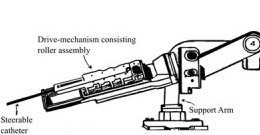

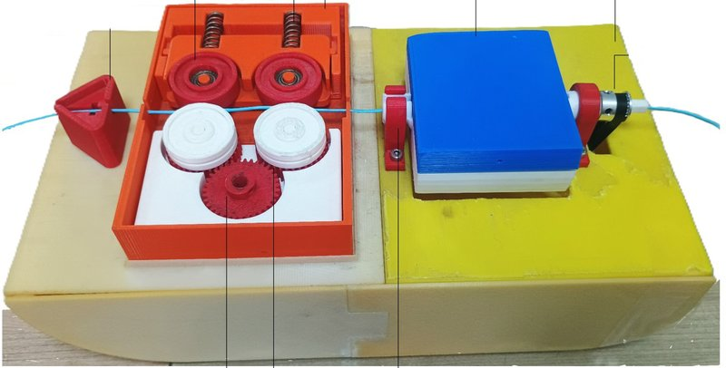

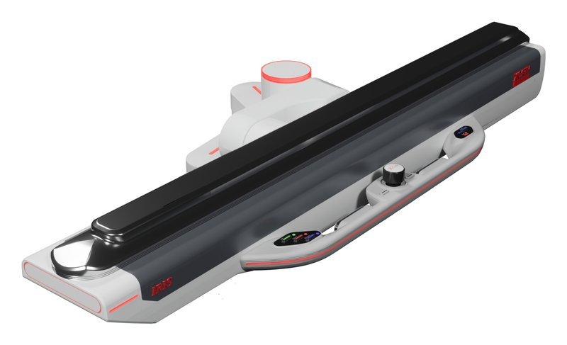


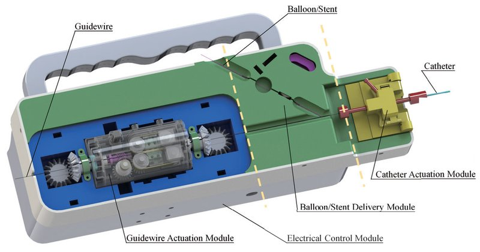


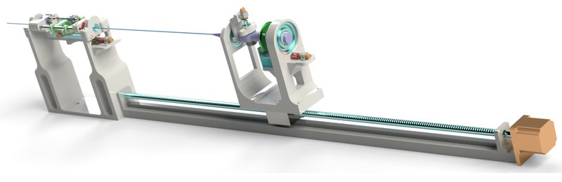


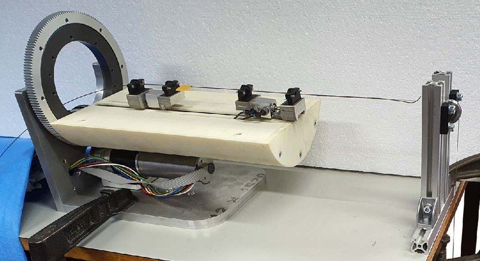


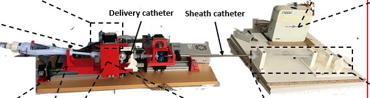


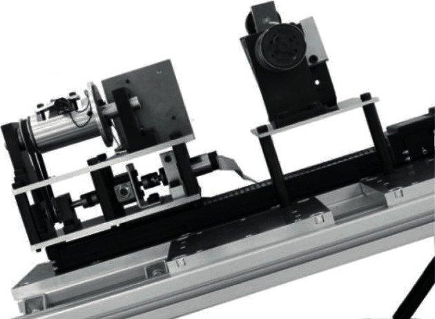


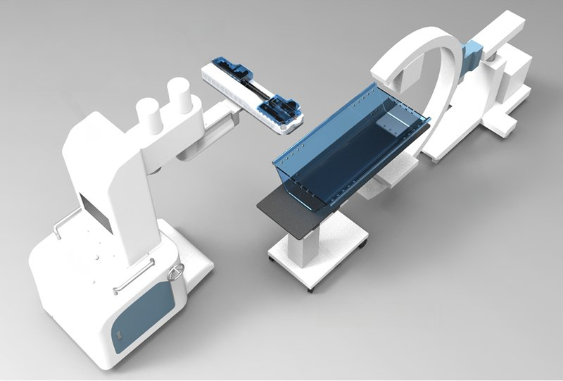


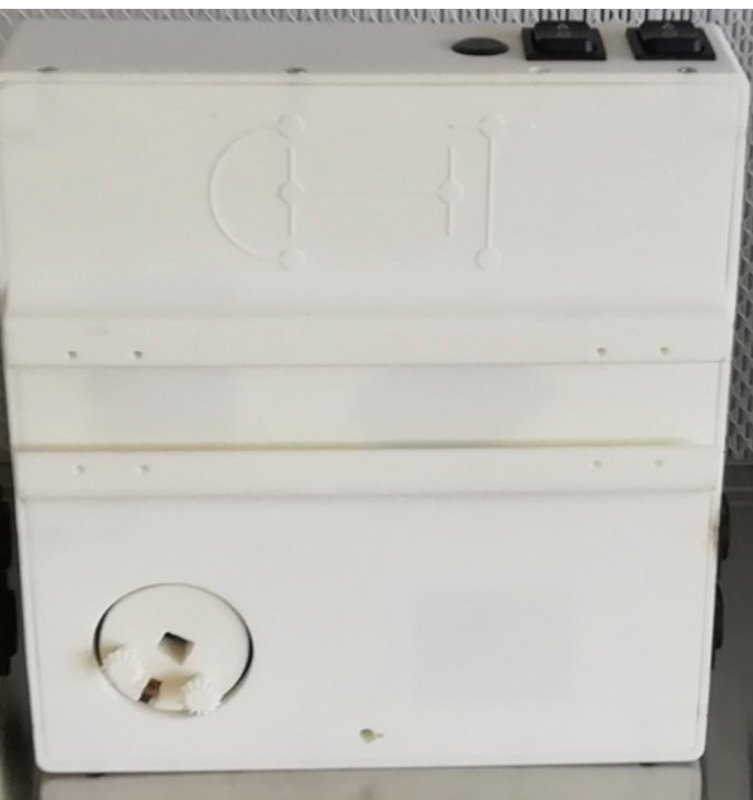
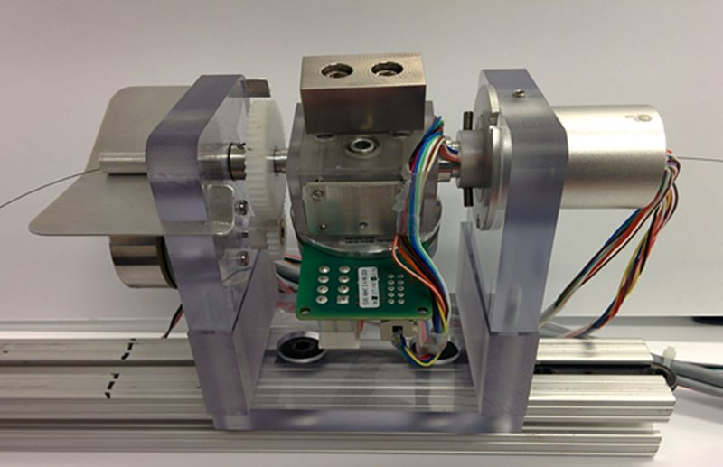


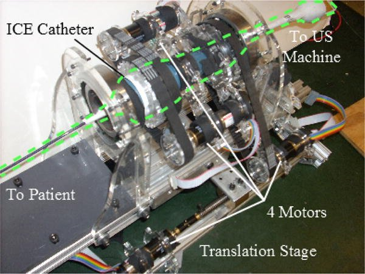


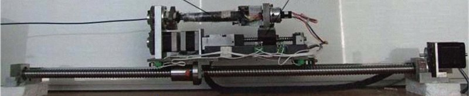


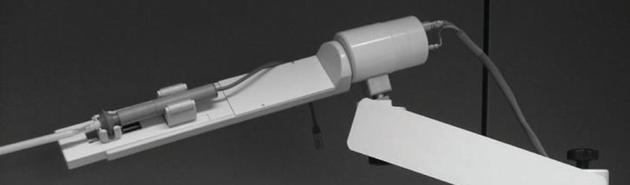


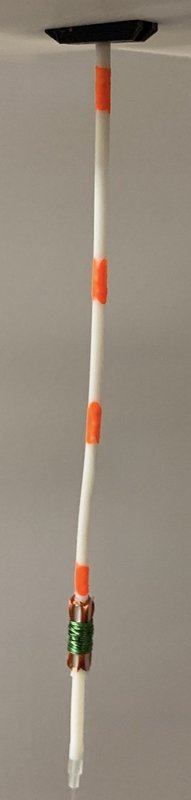
No robot matches these filters.